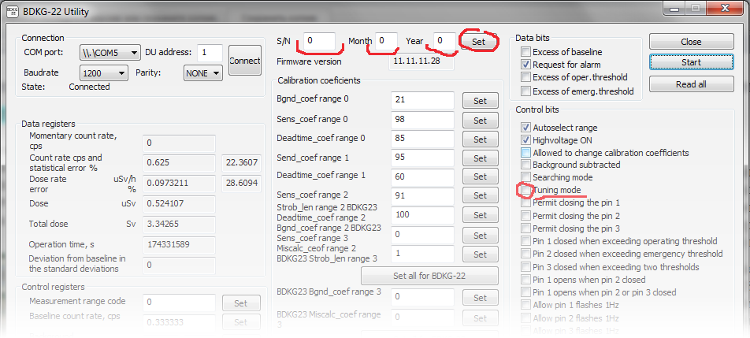

БДКГ-22/23. Как записать серийный номер в память БД

- Перейти в "Advanced Mode", для этого набрать на клавиатуре слово serial.
- Для разблокировки кнопок управления — еще раз набрать слово serial.
- Если программа считывает показания с БД (т.е. уже была нажата кнопка "Старт"), нажать "Стоп"
- Поставить флажок "Режим настройки"
- Записать серийный номер и дату в соответствующие поля
- Обязательно снять флажок "Режим настройки"(не забывать, при включенном "режиме настройки"
БД считает по другому алгоритму и данные будут сильно отличаться от правильных!)